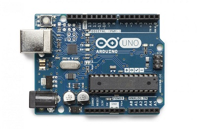

Objectif
Contrôler la vitesse de rotation d’un moteur électrique.
Pourquoi ?
Nous voulons contrôler un robot mobile. Ce robot est constitué de deux roues motorisées indépendantes. Pour faire avancer le robot tout droit, il faut faire tourner les deux roues à la même vitesse. Pour faire tourner le robot, il faut faire tourner une roue plus vite que l’autre. D'où l'intérêt de contrôler de façon fine la vitesse des moteurs.

Les technologies utilisées
Pour modifier la vitesse d’un moteur électrique, on utilise un Driver Moteur qui envoie une tension électrique plus ou moins grande aux bornes du moteur, ce qui agit sur la puissance développée par le moteur.
Point techno: le driver moteur
Un driver moteur contrôle la tension électrique aux bornes du moteur. Pour ce faire il agit comme un interrupteur qui allume et éteint le moteur très vite. Plus le
temps d’allumage est long, plus la tension aux bornes du moteur est grande, plus le moteur développe de la puissance.
Pour contrôler le driver moteur, on lui envoie un signal électrique de type PWM, qui contient la pulsation à suivre au driver pour hacher la tension électrique.
Délivrer une quantité d’énergie bien définie au moteur ne garantit pas une vitesse de rotation fixe. Plusieurs paramètres peuvent influer sur la puissance à donner à la roue pour tourner (usure du moteur, frottements, adhérence du sol, usure des pneus, etc). D’où la nécessité de mesurer la vitesse du moteur en continu, pour adapter la puissance électrique qu'on lui délivre. Pour mesurer la vitesse du moteur, nous utilisons un codeur.
Point techno: le codeur
Un codeur est un compteur de tours. Il en existe plusieurs types. Celui que nous utilisons est un codeur à effet hall. Il est constitué d’un aimant circulaire qui tourne
face à un capteur de magnétisme. Lorsque l’aimant tourne, le capteur détecte le changement de pôle sud et de pôle nord de l’aimant.


Afin d’acquérir les mesures du codeur et de contrôler le Driver Moteur en fonction de ces mesures, nous allons utiliser une carte Arduino.
Point techno: l’Arduino

Un arduino est un petit automate programmable pouvant acquérir des informations de capteurs et contrôler des machines. L’utilisateur écrit un programme informatique
sur son ordinateur, puis le télécharge dans la carte arduino qui va fonctionner en autonomie.
Modélisation du système
Nous allons faire un schéma du système.
Au commencement, nous avons un système de cette forme pour contrôler le moteur :

Nous allons ajouter à ce schéma le codeur, pour avoir la vitesse du moteur :

Maintenant, nous pouvons comparer la vitesse désirée et la vitesse mesurée, pour connaitre l’erreur à corriger. Nous ajoutons donc un comparateur.
Exemple: si la vitesse désirée vaut 20 tours/secondes et la vitesse mesurée vaut 15 tours/secondes, l'erreur est de 5.

Enfin, nous ajoutons le bloc qui traite l’erreur et qui en déduit la commande pour le driver moteur. C'est ce bloc qui contient les équations mathématiques.
Nous obtenons le schéma final:

Ce genre de boucle de régulation constitue un domaine bien connu de l’ingénierie, l’automatique. Cette méthode peut aussi bien servir à contrôler la vitesse d’un moteur avec un capteur de vitesse que la température d’un four avec une sonde de température ou le niveau de remplissage d’une cuve d'eau avec un détecteur de niveau, et bien d’autres applications encore. Par conséquent, les équations mathématiques du bloc Traitement ont déjà été pensées par des ingénieurs avant nous. Nous allons les réutiliser.
Le correcteur Proportionnel
Le principe : si l’erreur est grande (la vitesse mesurée est très différente de la vitesse désirée), on fait beaucoup varier la puissance électrique délivrée au moteur (on en rajoute beaucoup si le moteur tourne trop lentement ou on en enlève beaucoup plus si le moteur tourne trop vite). Si l’erreur est petite (la vitesse mesurée est proche de la vitesse désirée), on fait très peu varier la puissance délivrée. Cette opération est réalisée en boucle tout au long du fonctionnement du moteur.
Formule 1
(dans le cas du moteur qui tourne plus vite que désiré, l’erreur est négative, donc la puissance à délivrer est plus petite que la puissance délivrée au moment de la mesure)
Cette formule marche. Cependant, pour avoir un contrôle plus fin sur la correction, on ajoute un coefficient Kp qui va ajuster la correction. C'est le correcteur proportionnel.
Formule 2
Mise en pratique
Appliquons la formule 1, sans le coefficient correcteur Kp pour corriger de façon optimale:

Essayons avec la formule 2
avec différentes valeurs pour le correcteur proportionnel Kp:
Kp = 20
Kp = 5
Après plusieurs essais, nous obtenons une valeur optimale de Kp, pour Kp = 5.
Test ultime : freiner le moteur
Nous allons freiner le moteur avec les doigts. Si notre système de régulation fonctionne bien, le système délivrera plus de puissance au moteur pour conserver la même vitesse.
Photo des doigts
Graphique
Implémentation dans le robot
Aller tout droit sans régulation:
Aller tout droit avec régulation:
Cercle parfait